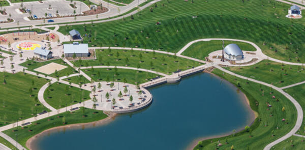

History of Meridian
Meridian's history begins in 1831, one year after the Choctaw Indians agreed to vacate their territories in Mississippi under the terms of the Treaty of Dancing Rabbit Creek. Richard McLemore of Virginia settled first in the area from which Meridian would grow. He offered free land to draw more people into the region. When the railroads linked to the area in 1855, Meridian's future was secured. During the early 1860s, Meridian was a small community of 15 families. New growth was spurred by the town's strategic geographical location for railroads. During the Civil War, Meridian was the site of a Confederate arsenal, a military hospital, a prisoner-of-war stockade, and headquarters for a number of state offices. In February 1864, General William Tecumseh Sherman's army destroyed the city's railroads and much of the surrounding area. Sherman is credited with saying, "Meridian no longer exists." Despite this, the railroad tracks were repaired in 26 working days, and the city continued to grow. As timber, cotton, and the rails used for transporting them brought good times back to Lauderdale County, Meridian entered its most progressive era, known as the Golden Age. From 1890 until 1930, Meridian was the state's largest city and a leader in manufacturing. During this time, much of the existing skyline was built. The Grand Opera House opened its doors in 1890. The Threefoot Building, an Art Deco masterpiece, became Meridian's tallest skyscraper, and Meridian's Carnegie Library, which now houses the Museum of Art, was constructed. Today, many of Meridian's historic neighborhoods feature fine homes and buildings typical of their eras. The city has nine recognized historic districts and neighborhoods, including the largest collection of historic buildings in its downtown district in the state. For more on Meridian's Downtown Historic District resources, visit the Historic Preservation Commission's website. Not only has Meridian produced architectural gems, but it also has produced many talented people. One of the most famous is Jimmie Rodgers, known as the Father of Country Music. Born in Meridian, the "Singing Brakeman" gained popularity during the late 1920s and early 1930s through his vocal and guitar music, which helped shape a new musical style. Sharecroppers and railroads influenced his songs of the poor man's South, giving him a distinctive place in the music world. One of Meridian's most famous entertainers today is Sela Ward, who entertained us in the television series Sisters, for which she won the 1994 Emmy Award for Best Actress in a Drama Series, and in the hit drama Once and Again for which she won the 2000 Emmy Award in the same category.
Welcome to Meridian
Meridian is a great place to live and we are so happy to have you! Meridian is one of the beating hearts of Southwest Idaho. Located approxiamtely 15 minutes from Boise Meridian is a great place for families to live. The commute time to many of the jobs in the state is not far and Meridian is largely unencumbered by large, tall buildings which helps you to feel more at home if you're the kind of person who doesn't like the big city feel. That is not to say that Meridian is out in the boonies, quite the opposite in fact. There are many fun and exctiting places to visit while you are in Meridian. The Village at meridian is one of Meridian's most noticeable spots. A fun outlet mall with many places to choose to eat and a large and exciting park just behind it makes it a wonderful spot to go with friends or to take your family.
Another thing to love about Meridian is all of the fun actvities that there are for kids to do in the summer. Being in the Southwest of the state we experice all four seasons which means that winters are cold and summers are hot. Winter activites include nearby Bogus Basin for all of your skiing and snowboarding needs.

And there are many fun things to do in the summer as well such Roaring Springs water park, nearby Eagle Island State Park. And there are so many forests that Idaho has to offer to explore and camp in. If you look hard enough you won't be bored anytime soon.
City Demographics
In 2019, Meridian, ID had a population of 102k people with a median age of 36.2 and a median household income of $71,389. Between 2018 and 2019 the population of Meridian, ID grew from 97,008 to 101,905, a 5.05% increase and its median household income grew from $68,131 to $71,389, a 4.78% increase. The 5 largest ethnic groups in Meridian, ID are White (Non-Hispanic) (86%), White (Hispanic) (4.92%), Asian (Non-Hispanic) (3.14%), Two+ (Non-Hispanic) (2.57%), and Black or African American (Non-Hispanic) (0.993%). 0% of the households in Meridian, ID speak a non-English language at home as their primary language. 97.5% of the residents in Meridian, ID are U.S. citizens. In 2019, the median property value in Meridian, ID was $274,900, and the homeownership rate was 76.2%. Most people in Meridian, ID drove alone to work, and the average commute time was 20.6 minutes. The average car ownership in Meridian, ID was 2 cars per household. Meridian, ID is home to a population of 102k people, from which 97.5% are citizens. As of 2019, 5.85% of Meridian, ID residents were born outside of the country (5.96k people). In 2019, there were 17.5 times more White (Non-Hispanic) residents (87.7k people) in Meridian, ID than any other race or ethnicity. There were 5.02k White (Hispanic) and 3.2k Asian (Non-Hispanic) residents, the second and third most common ethnic groups.